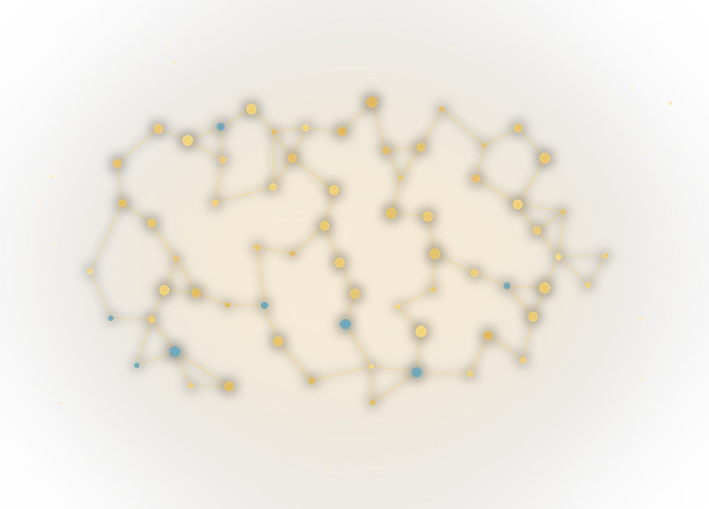
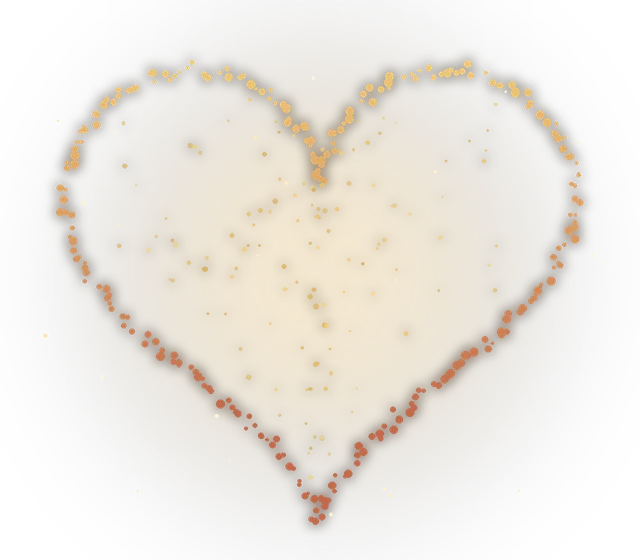

Розовый и коричневый шум
У белого шума всех частот поровну — оттого он резкий и «шипит». У розового и коричневого энергия плавно спадает к верхам, ровно как у водопада, дождя и ветра. Знакомый уху спад — вот почему цветной шум мягче белого.
Звуковая комната
Бинауральные ритмы, живой шум и таймеры. Собери звуковой фон для работы или отдыха и оцени его по собственному комфорту.
сейчас на сайте — · за месяц заходили — раз
Каждый пресет настраивает ритм, тон и атмосферу целиком. Названия описывают сценарий и характер звука, а не гарантированный эффект частоты.
Три канала: ритм, атмосфера и шум. Нажми на треугольник рядом со слоем, чтобы услышать его отдельно, собери микс и сохрани на потом.
Бинауральный — в каждое ухо свой тон, ритм слышен только в наушниках. Изохронный — один тон пульсирует, годятся и колонки.
Каждый звук синтезируется на лету. Ни файлов, ни интернета.
Отрезок работы, короткий перерыв, и так несколько кругов. Звук может сам смягчаться на перерывах.
На длинном выдохе пульс обычно чуть замедляется, а многие в этот момент чувствуют себя спокойнее. Цветок раскрывается на вдохе и складывается на выдохе: дыши вместе с ним.
Вдох на 4 счёта, задержка на 7, длинный выдох на 8. Выдох вдвое длиннее вдоха, поэтому схему часто выбирают на вечер.
Коротко, честно и без обещаний чуда. Ниже: диапазоны волн, механика ритмов и работы, на которые обычно ссылаются.

Дельта-активность характерна для глубокой стадии N3, но не является переключателем сна или памяти.
Тета-активность часто возрастает при дремоте. Одна полоса ЭЭГ не определяет творчество или расслабление.
Часто заметна при спокойном бодрствовании с закрытыми глазами и ослабевает при открывании глаз.
Наблюдается при разных видах активного бодрствования. Это описание ЭЭГ, а не рецепт для концентрации.
Исследуется в связи с обработкой информации. Аудиосигнал той же частоты не доказан как способ улучшить память.
Когда в каждое ухо подаются два близких тона, мозг воспринимает разницу между ними как медленное биение. Это и есть бинауральный ритм. Изохронный ритм проще: один тон ритмично пульсирует, поэтому наушники для него не обязательны.
Гипотеза «навязывания ритма» предполагает, что мозговая активность может частично меняться рядом с внешней пульсацией. Небольшие неоднородные исследования дают смешанные результаты: устойчивый эффект и оптимальная частота не установлены. Поэтому частотные названия здесь — способ описать звук, а не обещание изменить состояние мозга.
Никакой магии — только волны. Вот что на самом деле происходит со звуком и почему он так ощущается.
Дай в каждое ухо тон чуть разной высоты. Там, где гребни волн совпадают, звук громче; где расходятся — тише. Эта пульсация громкости и есть бинауральный ритм, а его частота равна разнице тонов: 200 и 210 Гц дают биение десять раз в секунду. Поэтому и нужны наушники — каждое ухо должно слышать свой тон.
У белого шума всех частот поровну — оттого он резкий и «шипит». У розового и коричневого энергия плавно спадает к верхам, ровно как у водопада, дождя и ветра. Знакомый уху спад — вот почему цветной шум мягче белого.
Ровный широкий звук приподнимает фоновый «пол». На нём резкий посторонний звук — щелчок двери, сигнал сообщения — меньше выделяется и меньше дёргает внимание. Это чистая акустика, а не воздействие на мозг.
Это описание физики и восприятия звука, а не обещание пользы для здоровья. Сайт ничего не лечит и не заменяет врача.
Наука об аудиостимуляции молода, результаты неоднозначны. Ниже работы, на которые ссылаются чаще всего, и что в них было на самом деле. Нажми на карточку, чтобы открыть первоисточник.
Метаанализ 22 исследований сообщил умеренный средний эффект (g = 0,45), но работы были небольшими и неоднородными; более поздние обзоры также находят противоречивые результаты.
PubMed мыши · 2016 Гамма-стимуляция 40 ГцРезультат получен у мышей при мерцающем свете, а не при бинауральном звуке. Он не подтверждает действие 40-Гц аудиопресета на память или болезнь Альцгеймера у людей.
PubMed сон · 2017 Розовый шум и глубокий сонВ исследовании 13 человек получали короткие импульсы, синхронизированные по ЭЭГ с фазой собственной медленной волны. Это не обычный непрерывный розовый шум приложения.
PubMed внимание · 2008 Прогулка восстанавливает концентрациюБерман, Джонидес и Каплан: после прогулки в парке люди заметно лучше справлялись с задачами на внимание, чем после улицы в центре города.
PubMed обзор · 2018 Медленное дыхание и нервная системаЗаккаро и коллеги: дыхание медленнее 10 циклов в минуту связано с ростом вариабельности пульса и субъективным спокойствием.
PubMed обзор · 2015 Обзор эффектов бинауральных ритмовОбзор описывает возможные эффекты и ограничения ранних работ. Последующие обзоры подтверждают, что результаты остаются смешанными.
PubMed обзор ЭЭГ · 2023 А навязывают ли ритмы вообще что-нибудь?Систематический обзор 14 работ с ЭЭГ: пять подтвердили гипотезу навязывания ритма, восемь дали обратный результат, одна — смешанный. Авторы делают вывод, что методики слишком разные, чтобы их сравнивать.
PubMed Россия · 2012 Бинауральные биения и состояние человекаРабота Волгоградского ГМУ: прослушивание меняло ЭЭГ и результаты психофизиологических тестов, заметнее на 18 Гц. Выборка маленькая — как и другие работы «за», результат нужно проверять на больших группах.
КиберЛенинкаПомодоро работает не из-за магии 25 минут. На длинной задаче внимание проседает, и перерыв нужен просто чтобы отвлечься. Чем занять перерыв — дело твоё, но экран за экраном отдыхом обычно не ощущается.
Психологи называют это восстановлением внимания. В опытах после прогулки в парке люди справлялись с тестом на внимание лучше, чем после улицы в центре города. Насколько помогает просто вид из окна, изучено хуже.
Ровный шум может маскировать отдельные внешние звуки, но не гарантирует более быстрое засыпание или глубокий сон. Лабораторные фазово-синхронизированные импульсы — не то же самое, что непрерывный шум приложения.
Медленное дыхание связывают с изменением вариабельности пульса и субъективным спокойствием. Если появляется головокружение или дискомфорт, практику нужно остановить.
Meduk Relax не медицинское изделие и не медицинская услуга. Сервис ничего не диагностирует, не лечит и не заменяет консультацию врача. Материалы раздела «Наука» носят справочный характер: исследования дают смешанные результаты, эффект индивидуален.
Основной известный риск — звуковая доза, то есть сочетание громкости и длительности. Держи уровень не выше 60% шкалы устройства, делай перерывы и прекращай прослушивание при боли, звоне, головокружении или тревоге.
Если приступы провоцируются звуком или музыкой, согласуй использование с неврологом. При тиннитусе или слуховом аппарате начинай с низкой громкости и обратись к аудиологу при дискомфорте. При кардиостимуляторе держи магниты наушников не ближе 15 см от устройства и следуй рекомендациям врача и производителя.
Не используй наушники за рулём, рядом с движущимся транспортом, при управлении механизмами и там, где безопасность зависит от слуха. Режим прозрачности не устраняет риск.
Надень наушники, нажми «Включить звук» и оцени комфорт в первые минуты. Дальше зайди в «Состояния» и выбери звучание, которое меньше отвлекает именно тебя. Если хочется своего — в «Студии» можно докрутить каждый слой и сохранить микс.
Надёжной схемы «частота → состояние» нет. Диапазоны дельта, тета, альфа, бета и гамма — условные метки ЭЭГ, а не переключатели сна, памяти или внимания. Выбирай пресет по звучанию и субъективному комфорту; улучшение результата не гарантируется.
В категории «Сон» есть тихие пресеты и сон-таймер: звук плавно затихнет и выключится сам. Они не гарантируют засыпание или более глубокий сон. Спать в проводных наушниках неудобно и небезопасно — лучше поставить негромкий шум с колонки или телефона.
Главный известный риск — звуковая доза: сочетание громкости и длительности. Держи уровень не выше 60% шкалы, делай перерывы и снижай громкость, если поверх звука трудно слышать собственный голос.
Для бинаурального ритма да: в каждое ухо должен попадать свой тон. Изохронный ритм, шум и атмосферы отлично звучат и из колонок.
Почти всегда дело в боковом переключателе над кнопками громкости, а на новых iPhone — в «Кнопке действия»: в беззвучном режиме iPhone глушит и звук из браузера. Выйди из беззвучного режима и прибавь громкость. Если не помогло — прибавь громкость прямо во время воспроизведения: iPhone держит громкость звонка и громкость медиа раздельно.
На Android — да: включи звук, и он не оборвётся, когда погаснет экран. На экране блокировки появится карточка с названием и обратным отсчётом: сколько осталось до конца рабочего отрезка в помодоро и сколько до выключения сон-таймера. На iPhone Safari усыпляет звук при блокировке — это ограничение самого браузера, обойти его со стороны сайта нельзя.
Не используй наушники рядом с движущимся транспортом и в других ситуациях, где безопасность зависит от слуха. Режим прозрачности не гарантирует, что ты вовремя услышишь опасность. Пресет «Прогулка» включай только в безопасном месте.
Да. Ритм воспринимается не как барабан, а как мягкая пульсация внутри тона. Надень наушники, выбери тета- или альфа-диапазон и прислушайся: лёгкое «плавание» звука и есть эффект.
Специальных качественных данных о долгосрочной безопасности ритмов мало. Основной известный риск — всё та же звуковая доза: слишком громкий или слишком долгий звук. При звукоиндуцируемых приступах согласуй использование с неврологом; при тиннитусе или слуховом аппарате остановись при дискомфорте; при кардиостимуляторе держи магниты наушников не ближе 15 см.
Доказанной терапевтической длительности нет. Начни с нескольких минут, оцени комфорт, делай перерывы и используй сон-таймер, чтобы звук не играл дольше задуманного.
Чтобы твоя статистика, миксы и настройки не путались с чужими: за одним компьютером может заниматься вся семья. Придумай отдельный пароль — не тот, что от почты или банка.
Профиль, почта, пароль, личные миксы и статистика хранятся только в твоём браузере, на твоём устройстве. На сервер они не уходят и туда не попадают: владелец сайта физически не может их прочитать. Пароль хранится не в открытом виде, а свёрнутым, и нужен только чтобы за одним компьютером не путались разные люди. Рекламы и сторонних трекеров нет.
Необязательная собственная аналитика включается только после твоего выбора. Если разрешишь, она видит: время и длительность визита, тип устройства, язык, ширину окна, тему, PWA-режим, домен-источник и события — какие разделы открывал, какие пресеты и воспроизведение включал, поддержку, Telegram и системное «Поделиться».
Журнал аналитики не сохраняет ни сырой IP, ни User-Agent — только суточный псевдоним, из которого нельзя восстановить человека: завтра он уже другой. Отдельно хранится такой же суточный псевдоним сетевого адреса для защиты от злоупотреблений, но не сам адрес. Плановый срок хранения журнала — 62 дня, очистка идёт ежедневно. Сигналы GPC и DNT в браузере отключают аналитику полностью.
Хостинг может вести свои технические логи по своим правилам — на это сайт не влияет. Техническая cookie используется только в закрытой admin-панели владельца.
Да. Весь звук синтезируется прямо в браузере, ничего не скачивается и не стримится. Страницу можно открыть даже с выключенным интернетом.
Полностью: без рекламы и без платных функций. Если сервис помогает, можно добровольно поддержать проект в разделе ниже.
На хостинг, домен и развитие: новые звуки, практики и разделы. О тратах рассказываем в Telegram-канале. Донат добровольный и безвозмездный: он ни на что внутри сайта не влияет и не открывает никаких функций, всё и так открыто каждому.

Meduk Relax живёт без рекламы и платных функций. Сбор идёт на хостинг, домен и развитие: новые звуки, практики и разделы. Любая сумма помогает держать проект бесплатным.
Сбор открывается по банковской ссылке: перевод с любой карты или через СБП. Это добровольное и безвозмездное пожертвование, а не покупка: донат не открывает никаких дополнительных функций.